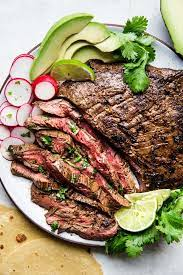

Carne Asada Recipe

Description
Carne Asada is all about the marinade. You take a nice piece of steak, marinate it with some delicious flavors, and then head out to the grill for a flavorful piece of beef you can eat plain, on a taco, burrito, or anything else you can think of. It is so good it is often eaten plain, like the fine steak it is.
Ingridients
- 2 limes juiced
- 4 cloves garlic crushed
- 1/2 cup orange juice
- 1 cup chopped fresh cilantro
- 1/2 teaspoon salt
- 1/4 teaspoon black pepper
- 1/4 cup vegetable oil
- 1 jalapeno minced
- 2 tablespoons white vinegar
- 2 pounds flank or skirt steak
Preparations steps
- In a gallon size resealable bag, combine lime juice, crushed garlic, orange juice, cilantro, salt, pepper, vegetable oil, jalapeno, and vinegar. Squeeze it around to mix it up.
- Put the entire flank steak into the resealable bag. Seal it up tight. Make sure all the meat is exposed to the marinade, squishing the bag around to coat. Refrigerate for at least 2 hours, or overnight.
- Heat an outdoor grill to high heat.
- Remove the flank steak from the marinade, and discard excess marinade. Cook on the grill for 7 to 10 minutes per side.
- Once done, remove from heat and let rest 10 minutes. Slice against the grain, and serve.